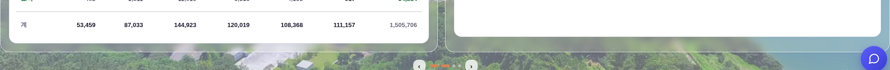
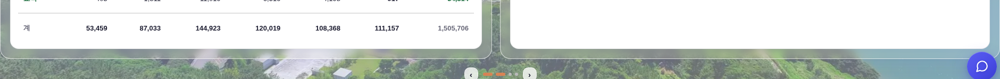
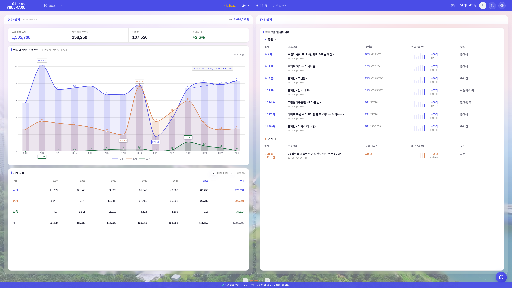
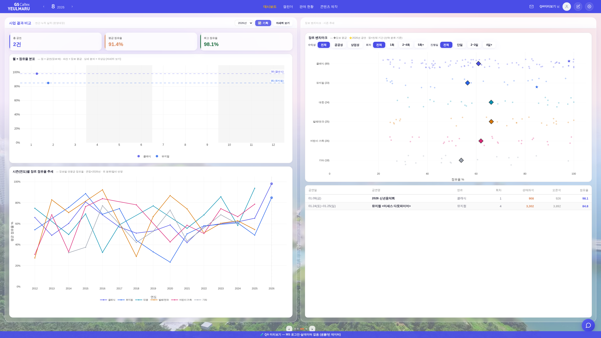

흰 라인 수평선 고정 + 「항상 이 상태」 잠금 게이트 260802f · 헤드리스 실측 7종 화면
운영자 지시: 「블러 처리한 부분을 항상 '후'와 같게 고정할 방법이 있나 · 내용 흰색칸은 지금과 같이 유지 · 그런데 후도 첨부 사진 부분이 수평이 아님」 → ① 남아 있던 14px 어긋남 제거 ② 그 상태를 커밋마다 자동 검사하는 게이트 신설.
① 수평이 아니었던 이유 — 좌 「전체 실적표」 카드는 정본 CSS [data-bizmbox] .bizm-card:last-child{margin-bottom:0}로 하단 여백이 0이라 박스 안선(993)에 딱 붙는데,
우 「판매 실적」 카드는 뒤에 빈 상세 슬롯 div(#rail-yrm-uha)가 있어 :last-child가 아니었다 → 여백 14가 살아남아 979에서 끝났다(=운영자 표시 지점). 수정: 상세가 비어 있으면 목록 카드가 그 박스의 마지막 흰 도형이므로 같은 규약(여백 0)을 적용, 상세가 뜨면 원복(카드↔상세 14 간격은 정본).
② 「항상 고정」 방법 — 사람 눈 대신 기계가 매 커밋 검사한다: tools/smoke_layout.mjs(pre-commit 자동 · 수동 npm run smoke:layout).
계약 4가지 = ⓐ좌·우 유리박스 상·하단선 Δ≤1.2px ⓑ마지막 흰 도형 하단선 Δ≤1.2px ⓒ흰 도형↔박스 안선 밀착(빈 유리 ≤2.5px·잘림 0) ⓓ재계산 12회 무흔들림.
깨지면 커밋이 막힌다. 역검증: 이 수정 직전 머지본에 게이트를 걸면 정확히 Δ14.0px를 잡아내며 실패한다(감시가 실제로 작동).
③ 큰/작은 화면도 같이 — 1600×900에서 3면 좌측이 112px 넘치던 것(차트가 최소치라 못 줄임) → 분포 차트까지 순차 흡수. 2560×1440에서 좌측에 199px 빈 유리(차트가 최대치라 못 늘림) → 마지막 흰 카드가 흡수(우측 판매 실적 카드와 같은 규약).
① 문제 지점 — 화면 하단 스트립(운영자 표시 부분)
1920×1080 · 좌 전체 실적표 카드 하단 vs 우 판매 실적 카드 하단 (빨간 점선 = 좌측 하단선)


전
전: 좌 993 / 우 979 → Δ14px · 후: 좌 993 / 우 993 → Δ0.
② 큰 화면(2560×1440) — 차트가 최대치여도 흰 라인 일치
좌: 차트 560(최대) + 전체 실적표 카드가 남는 몫 흡수 · 우: 판매 실적 카드 — 두 흰 도형이 같은 하단선

후 · 1면

후 · 3면
3면도 동일: 좌 「시즌 추세」 카드와 우 「공연 목록 표」가 같은 라인에서 끝난다(전에는 좌 199px·47.9px 빈 유리).
실측표 — 화면 7종 전수(게이트 결과)
화면
박스 상·하단 Δ
흰 라인 Δ
안선 밀착
판정
2560×1440
0 / 0
0
좌 카드 흡수
PASS
1920×1080
0 / 0
0
차트 399
PASS
1600×900
0 / 0
0
시즌+분포 순차 압축
PASS
1440×820
0 / 0
0
차트 확장으로 빈 유리 0
PASS
1366×768 · 1280×800
0 / 0
0
압축 단계
PASS
1920×740(초단신)
0 / 0
0
최소 차트 후 잔여는 박스 내부 스크롤(정본)
PASS
수정 직전 머지본(역검증)
0 / 0
14.0
우 빈 유리 14
FAIL(게이트가 잡음)
부가 회귀: 유리 프레임 노드 유지 true(번쩍임 계약 #543) · 재계산 12~20회 상태 1개 · 드릴(상세) 열림 시에도 카드+슬롯 하단 = 안선 · 좁은 화면(1100) 이젤·fill 전부 해제 · check_design 1605/1605 동결 · JS 회귀 0.
※ 목데이터로 상세를 열면 SVG 좌표 NaN 경고가 뜨는데 수정 전 머지본에서도 동수(72건) — 목데이터에 상세 차트용 필드가 없어서 생기는 하네스 아티팩트(운영 데이터 무관).